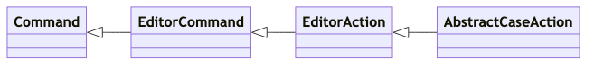

VS Codeで文字列のちょっとした変換ができるんです！
〜実装まで覗くクイックツアー〜
VS Codeで文字列のちょっとした変換ができるんです！
〜実装まで覗くクイックツアー〜
- Event:
VS Code Conference JP 2024
- Presented:
2024/04/20 nikkie
お前、誰よ（自己紹介）
nikkie ／ 毎日 ブログ 執筆、連続520日突破
ソフトウェアエンジニアリングで突破するデータサイエンティスト（We're hiring!）
仕事もプライベートも VS Code で Python と戯れています
1年ぶりですね
このトークでは（fortee）
VS Codeで 文字列のちょっとした変換 をする方法を紹介
どのように実装されているか、少しだけ覗いてみよう（実装の話）
本題：文字列のちょっとした変換
英語の文字列（例えば、Emily Stewart）を すべて小文字 にしたい
手に馴染む言語（Python）でやってました
>>> "Emily Stewart".lower()
'emily stewart'選択肢は色々ある
$ python -c 'print("Emily Stewart".lower())'
emily stewart
$ echo 'Emily Stewart' | tr '[:upper:]' '[:lower:]'
emily stewartVS Codeでも、できます！！
テキストを選択
コマンドパレット
Transform で始まるコマンドを選択
コマンドパレットとは
押してみて！🫵
Linux または Windowsの方： Ctrl + Shift + P
macOSの方： ⇧⌘P （＝ Command + Shift + P）
デモ
VS Codeを操作して、Emily Stewartを小文字にする
Version: 1.88.1 (Universal)
OS: Darwin arm64 21.6.0
Transform to (1/2)
Lowercase |
emily stewart |
Uppercase |
EMILY STEWART |
Title Case |
Emily Stewart |
Transform to (2/2)
Snake Case |
emily_stewart |
Camel Case |
emilyStewart |
Pascal Case |
EmilyStewart |
Kebab Case |
emily-stewart |
例：Snake ➡️ Kebab
Transform to Kebab Case
sphinx_new_tab_link ➡️ sphinx-new-tab-link
自作ライブラリ の開発中にちょっと助かりそう
参考資料 🏃♂️
🏃♂️は本編ではスキップします。興味ある方向けです
コマンドパレットまわりで寄り道
Quick Open
コマンド
寄り道1️⃣ Quick Openとは
押してみて！🫵
Linux または Windowsの方： Ctrl + P
macOSの方： ⇧P （＝ Command + P）
> があるかないか
Quick Openで > と打ち込むと、コマンドパレット
コマンドパレットで > を消すと、Quick Open
時間に余裕があったら 行き来 するデモ
寄り道2️⃣ すべてはコマンド
コマンドパレットで Transform to コマンドを検索・実行 した
VS Code拡張開発でもコマンドを実装する
昨年の拡張開発の発表資料より
拙ブログ 🏃♂️
🌯まとめ：VS Codeで文字列のちょっとした変換ができるんです！
テキストを選択
コマンドパレット
Transform to コマンド
完
文字列のちょっとした変換にVS Codeを使ってみてください！
VS Codeで文字列のちょっとした変換ができるんです！
〜 実装まで覗くクイックツアー 〜
これらのコマンドはどう実装されている？
VS Codeの実装（TypeScript）を見ていくパート
コマンドごとにクラスがある
registerEditorAction() 関数
registerEditorAction(LowerCaseAction);※コマンドパレットで提供される仕組みは、ここっぽいくらいにとどめます
Transform to コマンドに対応するクラス
UpperCaseActionLowerCaseActionTitleCaseActionSnakeCaseActionCamelCaseActionPascalCaseActionKebabCaseAction
共通のスーパークラス AbstractCaseAction
// https://github.com/microsoft/vscode/blob/1.88.1/src/vs/editor/contrib/linesOperations/browser/linesOperations.ts#L1088
export class LowerCaseAction extends AbstractCaseAction {
// 省略
}Caseに関する 抽象 Action
サブクラスで具体のActionを実装する（例：小文字にする）
AbstractCaseAction までの継承関係 🏃♂️

AbstractCaseAction はGoFの Template Method パターン
// https://github.com/microsoft/vscode/blob/1.88.1/src/vs/editor/contrib/linesOperations/browser/linesOperations.ts#L1032
export abstract class AbstractCaseAction extends EditorAction {
public run(_accessor: ServicesAccessor, editor: ICodeEditor): void {
// 処理の中で _modifyText が呼ばれる
}
protected abstract _modifyText(text: string, wordSeparators: string): string;
}穴埋め問題 になっている
_modifyText： テキストの変更方法だけ、具体のCaseのActionで埋めればよい
_modifyText() の実装を見る
LowerCaseActionTitleCaseAction
1️⃣ LowerCaseAction
JavaScriptのメソッド を使う実装（
UpperCaseActionも同様）（私の理解が雑すぎるかもですが、）TypeScriptは型付きのJavaScript
テストコードより
'HELLO WORLD' ➡️ 'hello world'
このメソッドで実装： toLocaleLowerCase()
呼び出した文字列の値を、ロケールに依存した対応付けに基づいて小文字に変換して返します。
LowerCaseAction の _modifyText()
// https://github.com/microsoft/vscode/blob/1.88.1/src/vs/editor/contrib/linesOperations/browser/linesOperations.ts#L1098-L1100
protected _modifyText(text: string, wordSeparators: string): string {
return text.toLocaleLowerCase();
}2️⃣ TitleCaseAction
正規表現 を使う実装
SnakeCaseActionなどなども同様
テストコードより
入力 |
出力 |
|
|
|
|
|
|
正規表現は、これだ！！
new RegExp('(^|[^\\p{L}\\p{N}\']|((^|\\P{L})\'))\\p{L}', 'gmu')正規表現リテラルの作成は 2通り
スラッシュで囲む
/ab+c/gnew RegExp("ab+c", "g")（👈今回はこちら）
MDN 正規表現の作成
RegExp コンストラクタの引数
第1引数がパターン
\\pは\pの エスケープ
第2引数がフラグ
グローバル検索(g)・複数行の検索(m)・unicode(u)
独自クラス BackwardsCompatibleRegExp 🏃♂️
正確には、
RegExpを返すBackwardsCompatibleRegExpを定義した実装RegExpインスタンス作成時に例外を送出したら、握りつぶしてnullを返す（＝後方互換）
正規表現を使った _modifyText()
// https://github.com/microsoft/vscode/blob/1.88.1/src/vs/editor/contrib/linesOperations/browser/linesOperations.ts#L1146-L1155
protected _modifyText(text: string, wordSeparators: string): string {
// 省略
return text
.toLocaleLowerCase()
.replace(titleBoundary, (b) => b.toLocaleUpperCase());
}正規表現を使った replace()
置換文字列として関数を指定。シグネチャは
bのみbは 正規表現に一致した文字列キャプチャグループの
()を（幾重も）含むが、このreplaceでは無視
MDN 置換文字列としての関数の指定
正規表現 '(^|[^\\p{L}\\p{N}\']|((^|\\P{L})\'))\\p{L}' 🤯
new RegExp('(^|[^\\p{L}\\p{N}\']|((^|\\P{L})\'))\\p{L}', 'gmu');
// /(^|[^\p{L}\p{N}']|((^|\P{L})'))\p{L}/gmutitleBoundaryと呼ばれる（再掲）
\をエスケープするために\\
\p{L}
一般カテゴリプロパティが L etter の Unicode文字の集合
文字にマッチ する。記号や空白文字にはマッチしない
3つの「または」（ | ）
^[^\\p{L}\\p{N}\']((^|\\P{L})\')
これらのあとに \\p{L} が続く
(1) ^ 入力の先頭
mフラグで「改行文字の直後にも一致」
'(^)\\p{L}'は 先頭の文字 に一致（'hello world'の'h'）
MDN 境界型のアサーション
(2) 文字クラス [^\\p{L}\\p{N}\']
否定の
^「UnicodeでLetterまたはNumber、またはシングルクォート」 でない
([^\\p{L}\\p{N}\'])\\p{L}は'hello world'の' w'にマッチ
MDN 文字クラス 種類
(3) ((^|\\P{L})\')
\P{L}は、\p{L}の否定（すなわち、 文字でない ）(^|\\P{L})：先頭、または、文字でない
((^|\\P{L})\')\\p{L} がマッチするもの
'\'physician\'s assistant\''で'\'p'にマッチ（先頭の方がマッチ）'hello \'world'の' \'w'にもマッチ（文字でない方がマッチ）
この正規表現の名は titleBoundary
タイトルケースにする上での 境界
'hello world'であれば、境界に一致する部分文字列は'h'と' w'
🌯要点：タイトルケースの境界部分を大文字にする
テキスト全体を 小文字 にする
タイトルケースの 境界部分 を 大文字 にする
// https://github.com/microsoft/vscode/blob/1.88.1/src/vs/editor/contrib/linesOperations/browser/linesOperations.ts#L1152-L1154
return text
.toLocaleLowerCase()
.replace(titleBoundary, (b) => b.toLocaleUpperCase());拙ブログより 🏃♂️
🌯まとめ：VS Codeで文字列のちょっとした変換ができるんです！
コマンドパレット の Transform to コマンドで文字列を変換できる
コマンドごとにActionクラス。
_modifyText()を実装する Template Method パターンUnicode文字クラスエスケープをはじめ、正規表現を駆使
ご清聴ありがとうございました
コマンドパレットで Enjoy coding!✨